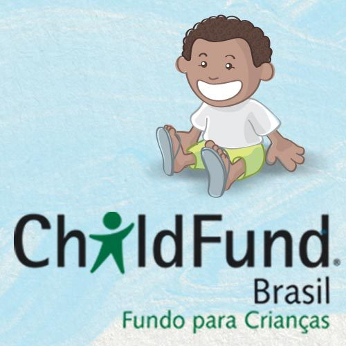
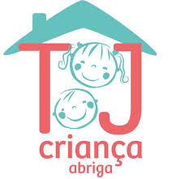
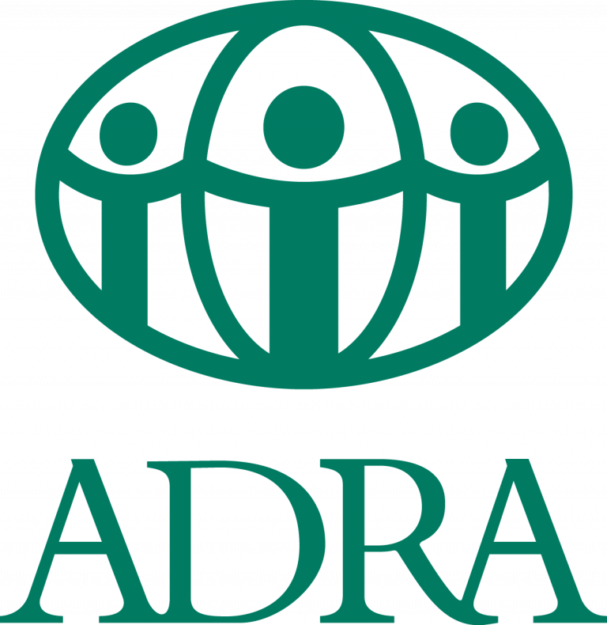

ChildFundDesde 1966 no Brasil, o ChildFund Brasil é uma organização de desenvolvimento social que mobiliza pessoas para a transformação de vidas. Crianças, adolescentes, jovens, famílias e comunidades em situação de risco social são apoiadas para que possam exercer com plenitude o direito à cidadania. Tem como missão apoiar o desenvolvimento de crianças em situação de privação, exclusão e vulnerabilidade social, tornando-as capazes de realizar melhorias em suas vidas. |
 |
Irmão SolA Associação Irmão Sol é uma entidade beneficente e sem fins lucrativos, vocacionada a acolher crianças e adolescentes em situação de abandono ou risco pessoal e social. Nasceu do trabalho incansável de Frei Mariano Gijsen (1921-201) na defesa, acolhida e cuidado de crianças e adolescentes. Atua no município de Belo Horizonte, MG, e trabalha em parceria com órgãos públicos. |
TJ CriançaÉ uma organização de natureza filantrópica, sem fins lucrativos.Nasceu da iniciativa de um grupo de servidores do Tribunal de Justiça de MG com o objetivo de proporcionar proteção especial integral a crianças de 3 a 6 anos, em situação de risco social e/ou pessoal, vítimas de violação de direitos, encaminhadas pelo Juizado da Infância e da Juventude de BH. |
 |
|  |
Casas EsperançaÉ uma iniciativa da Agência Adventista de Desenvolvimento e Recursos Assistenciais (ADRA BRASIL – Regional Minas Gerais) realizada desde abril de 2014 que em parceria com a Prefeitura de Belo Horizonte acolhe crianças e adolescentes de 0 a 18 anos que foram retirados de seus pais ou responsáveis através de determinação judicial, por se encontrarem em situação de risco, ou seja, expostos a condições que prejudicavam seu desenvolvimento físico, emocional e social. |